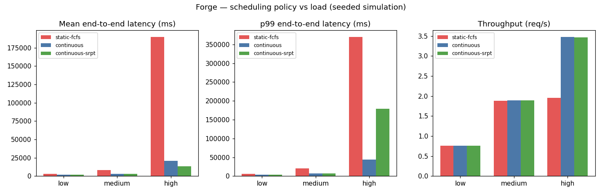

LLM inference serving simulator: quantifying how scheduling policy shapes latency
Serving concurrent LLM requests on GPUs is a scheduling problem: requests arrive unpredictably with wildly different prompt and generation lengths. The wrong batching policy wastes GPU capacity and blows up user-facing latency.
Teams choose serving configurations by folklore and vendor defaults. There is little accessible quantification of how much scheduling policy matters — how TTFT, p99, and throughput respond to load under static vs continuous batching.
Forge is a discrete-event simulator of an inference engine: Poisson arrivals, iteration cost t = T₀ + K · batch_tokens, an 8,192-token KV-cache cap, chunked prefill. It compares static FCFS vs continuous batching vs continuous + shortest-remaining-time-first across low/medium/high load (1,500 requests per cell, seed 42).
| Load | Policy | Mean e2e | p99 e2e | Mean TTFT | KV util |
|---|---|---|---|---|---|
| high (4 rps) | static-fcfs | 189,503 ms | 369,406 ms | 186,770 ms | 23% |
| continuous | 20,607 ms | 44,399 ms | 14,431 ms | 98% | |
| continuous-srpt | 13,652 ms | 178,710 ms | 7,506 ms | 96% |
Continuous batching cuts mean latency 9.2× at high load. SRPT cuts the mean another 34% — but p99 explodes 4×: classic starvation of long requests.

experiments/run_experiments.py — re-running reproduces these exactly.src/agentic_systems/forge/
simulator.py # discrete-event engine: arrivals, scheduler, KV cap
03-forge-inference/
experiments/run_experiments.py # 3 policies x 3 loads, 1500 req/cell
Full source, tests, and experiment code: 03-forge-inference/ ·
Run: cd 03-forge-inference && python3 experiments/run_experiments.py